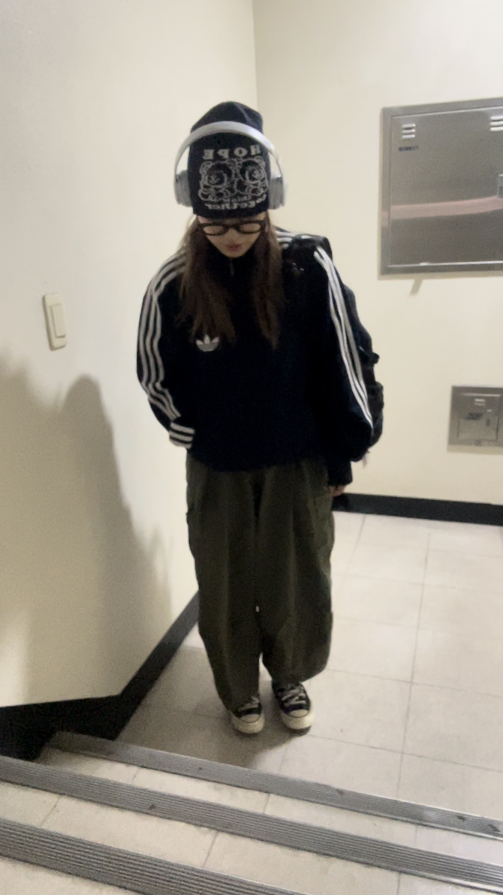

ARCHIVE
Daily Look
Daily Look
at
20
20

🔥🐦
[at 20] 이번 학기에는 이상하게 과거로 회귀하고 싶은 욕망이..🫡 혹시 학기가 너무 힘들었나.. 추억의 노래를 들으며, 중학교부터 함께했던 파이어버드저지와 함께하는 룩!안경과 비니로 완성해주기. 비니는 사실 살짝 잘못 샀다ㅠ 정말 리얼 꼴뚜기가 되는 것 같다. 프린팅이 위쪽까지 꽉 차있어서 접기도 애매하고, 그냥 올려서 연출하자니 안그래도 긴 얼굴이 부각되는 것 같다. 그래서 헤드셋으로 꼬옥 눌러주어야 하는 단점이 있다 어흑
[at 20] 이번 학기에는 이상하게 과거로 회귀하고 싶은 욕망이..🫡 혹시 학기가 너무 힘들었나.. 추억의 노래를 들으며, 중학교부터 함께했던 파이어버드저지와 함께하는 룩!안경과 비니로 완성해주기. 비니는 사실 살짝 잘못 샀다ㅠ 정말 리얼 꼴뚜기가 되는 것 같다. 프린팅이 위쪽까지 꽉 차있어서 접기도 애매하고, 그냥 올려서 연출하자니 안그래도 긴 얼굴이 부각되는 것 같다. 그래서 헤드셋으로 꼬옥 눌러주어야 하는 단점이 있다 어흑
color